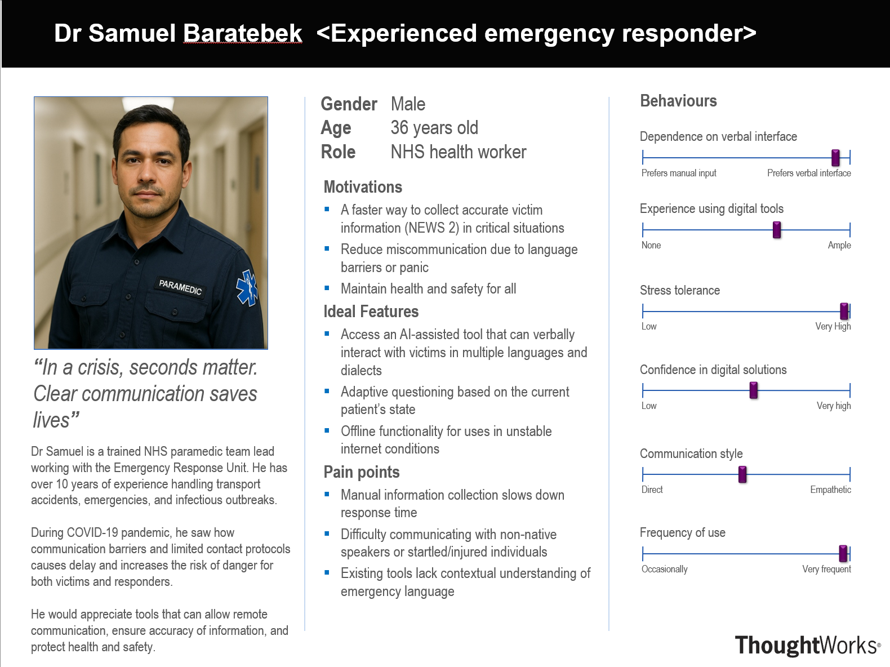
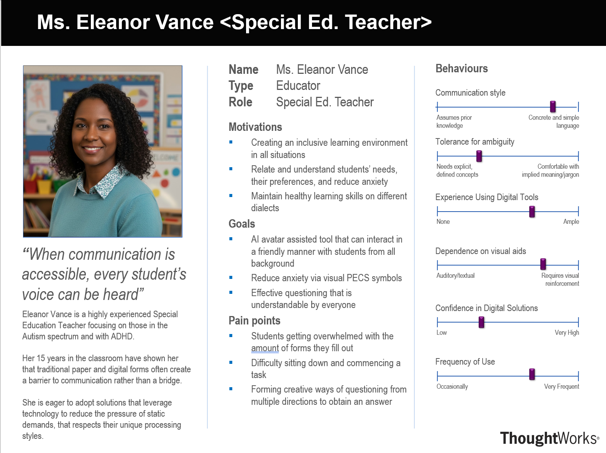

Requirements
An overview of the methods for gathering and defining project requirements.
We are proud to work with:
National Autistic Society (NAS)
The National Autistic Society (NAS) is the leading UK charity for autistic people and their families, founded in 1962. It provides support services, including schools, residential care, and helplines, while campaigning for rights, better services, and improved public understanding of autism. They aim to create a society that works for autistic people.
Microsoft
Microsoft is a global American technology company founded in 1975 by Bill Gates and Paul Allen. It dominates the software industry, best known for the Windows operating system, Microsoft 365 (Office) suite, Azure cloud services, and Xbox gaming. Currently led by CEO Satya Nadella, it is a top leader in artificial intelligence (AI).
How it all started:
Project Background
AvatarForms was developed in response to a recurring challenge seen across many services: people are often expected to complete digital forms that do not match their communication preferences, confidence levels, or cognitive needs. Although these forms are technically functional, they often assume prior context, abstract language comprehension, and sustained concentration, which can create significant barriers for a wide range of users.
In practice, this often means successful completion depends on extra one-to-one support. In classrooms, clinics, and community settings, staff frequently need to reinterpret questions, break tasks into smaller steps, and reassure users throughout the process. While this support is essential, it can unintentionally reduce user autonomy and consume valuable staff time that could otherwise be used for direct support and care.
The project therefore began with a clear objective: to reframe form-filling as an accessible, guided interaction rather than a static reading-and-writing task. While the first deployment was shaped with NAS and SEND learners as the primary user base, the same approach can support anyone who faces barriers with traditional forms. By introducing a conversational avatar that can explain intent, clarify ambiguity, and respond adaptively, AvatarForms aims to improve comprehension, confidence, and independence while reducing operational burden on staff.
The problems that we want to solve:
Project Goals
AvatarForms aims to take static forms and transform them into interactive, supportive tools for people who face hurdles with traditional digital forms, using human-like avatar interactions powered by AI. The initial design focus was SEND learners in partnership with NAS. Specifically, our goals were as follows:
- The avatar will provide contextual support to guide users through form completion.
- The avatar will ensure the answers given are appropriate and complete.
- The avatar will provide a natural, comfortable interaction experience.
- The platform will improve confidence and engagement by creating a more supportive form experience.
- The platform will provide a scalable tool that saves time and staff resources across services and settings.
- The platform will collect and display responses in a structured manner, much like a traditional digital form.
Our requirements gathering process included the following methods:
Interviews
We conducted semi-structured interviews with key stakeholders across three sectors: emergency response, education, and general practice. This approach allowed us to deeply explore user pain points and discover unexpected barriers to form completion.
Emergency Responders highlighted communication challenges, particularly with non-English speakers and during high-stress situations. They noted that current manual processes (verbal questioning, notes, digital forms) are time-consuming and prone to missing critical details. They sought a solution that is simple, reliable, and requires minimal setup overhead.
Educators revealed that both traditional and digital forms frequently overwhelm SEND students, causing anxiety and shutdown before completion. They adapt by relying heavily on visual supports (PECS symbols, colors, prompts) and identified a need for tools that feel friendly and human, capable of interpreting responses across verbal cues and emotional signals.
General Practitioners reported time and clarity challenges, often needing to re-interview patients after self-reported information. They found existing forms too rigid and unable to adapt to different communication styles, leading to incomplete or inaccurate data. All stakeholders expressed openness to AI-assisted solutions that save time, remain accurate, and protect data security.
Design Ideas and Heuristic Evaluation
A heuristic inspection approach was used due to its efficiency and its ability to identify high-impact usability issues without requiring additional participant recruitment. The evaluation focused on key usability dimensions and mapped observations to established heuristic principles.
- Navigation and user control: The evaluation examined how effectively users can move between tasks, recover from unintended actions, and maintain orientation within multi-step workflows.
- Information ordering and controllability: The evaluation assessed whether users can organise, sort, and review content in ways that align with their priorities and decision-making needs.
- Upload error handling: The evaluation reviewed how clearly the interface communicates file-format constraints, validation outcomes, and next steps when upload errors occur.
Overall, the heuristic evaluation provided a structured basis for strengthening usability, reducing friction in task completion, and improving the reliability of user interactions.
Iterative Evaluation with Partners
We held fortnightly meetings with NAS, in particular, SEND school teachers. Each iteration brought new feedback based on real-world testing and observation, which we used to refine the design for our initial SEND-focused user base while shaping principles that also transfer to wider user groups. Some key insights include:
- A minimal interface was preferred to reduce cognitive load and improve focus.
- Users wanted the avatar to feel more human and less robotic, with natural language and empathetic responses.
- Multiple Avatar options would allow students to select the one that best fits their preferences.
- Graphical non-human avatars (e.g., dinasours) would also appeal to young users.
Core Requirements Identified
Synthesis of interview findings led to a set of core requirements that cut across all user groups:
- Adaptive communication: Avatars must adjust to different communication styles and language needs, interpreting both explicit answers and emotional/contextual cues.
- Clarity and simplicity: Instructions, questions, and interactions must be clear and jargon-free, with minimal cognitive load and visual density.
- Time efficiency: Solutions must reduce time spent on data collection and re-interviewing, freeing staff and professionals for direct care.
- Supportive experience: The interface must feel friendly, approachable, and empathetic, reducing anxiety and enabling independent completion.
- Data accuracy and security: Systems must capture complete and accurate information while protecting user privacy and sensitive data.
Personas
Three detailed personas were created to represent distinct user contexts and validate our design approach:


AvatarForms can support many services where people need extra guidance, confidence, or accessibility support while completing forms.
Schools
Schools can use AvatarForms for permission slips, trip forms, wellbeing check-ins, and onboarding questionnaires. The avatar can explain each question in simple language, reduce anxiety around written tasks, and help pupils complete forms more independently with less one-to-one staff support.
Hospitals & GP clinics
Healthcare settings can use AvatarForms for patient registration, pre-appointment screening, and consent preparation. Step-by-step spoken guidance can improve understanding of medical questions, increase completion accuracy, and support patients who find standard forms overwhelming or unclear.
Emergency Responder
Emergency responders can use guided forms for incident reporting, witness statements, and safeguarding referrals. The avatar can break complex prompts into manageable steps, helping users provide clearer information quickly during high-stress situations.
Community Centres
Community organisations can apply AvatarForms to membership sign-ups, support referrals, and event registrations. By providing accessible explanations and a friendly conversational flow, the platform can make local services easier to access for people with different communication needs.
Functional requirements prioritized using the MoSCoW method.
Must Have
- The avatar must be able to rephrase prompts and ask clarifying follow-up questions.
- The platform must handle different question formats, including multiple-choice and checkbox inputs.
- The platform must provide support for multiple languages.
- The platform must support multiple user profiles.
Should Have
- The platform should provide a selection of avatar options.
- The platform should support local deployment.
Could Have
- The platform could include sign language support.
- The platform could integrate with Microsoft Teams.
- The platform could offer ultra-realistic avatar styles.
Will not
- The platform will not compromise user privacy.
- The platform will not discriminate against, or produce biased outcomes for, specific demographic groups.